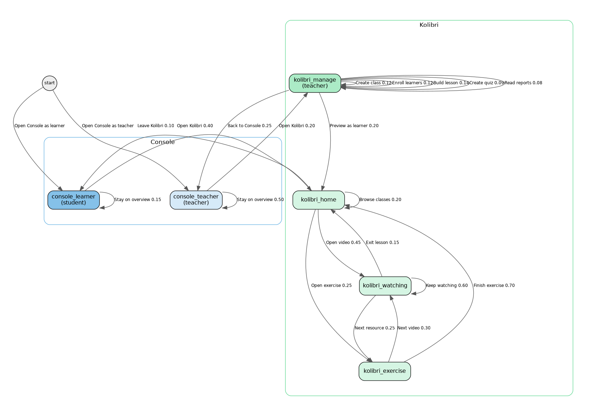
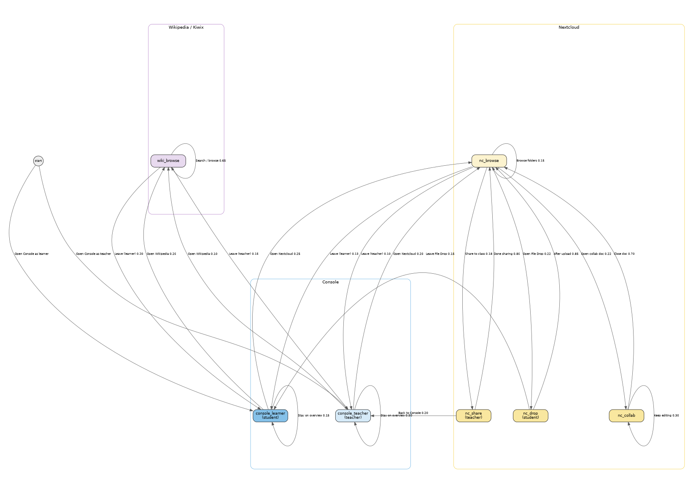

Status: Proposal draft for discussion — supersedes multi-engine-classroom-scenarios.md (2026-09-28).
Revision: 2026-09-30c — Koen review: Markov chapter uses states / actions only; console_teacher rename; manage actions wired only inside kolibri_manage; Test Scenarios chapter separated; graph layout fixed for PDF.
Author: Steve (Lead Bot), 2026-09-29 (rev. 2026-09-30c)
Audience: Koen / IDEA leads
Companion capacity issue: idea#159 — measure safe concurrent Kolibri video streams per instance
Koen asked for a clean framing of why a school runs more than one Engine, how that looks with a small named fleet, what classroom scenarios matter, and how a Markov usage graph can drive realistic tests later.
This document is a proposal draft. Implementation, discovery protocol, auth, Playwright harnesses, fleet claim scripts, and Engine code changes are explicitly out of scope here (see final section). The Markov usage graph itself is a concrete state/action model for later tests — not labeled conceptual.
Prior drafting treated multi-Engine load distribution as an undocumented assumption. That was wrong.
It is already in the IDEA vision / solution description:
All Appdockers on the same LAN will automatically find one another and when a new Appdocker device is added, the catalog of available apps is automatically extended with the apps docked onto the new device.
Performance is optimized by adding Appdockers and redistributing the apps over the Appdockers.
Source: agent-engine-dev/proposals/solution-description.md
Referenced from idea/docs/grok-bot-setup.md as the Engine vision and intent doc.
The multi-Engine classroom story below extends that vision into classroom roles and usage scenarios; it does not invent the load-spread principle.
The physical act is simple: add an Engine and plug a demanding app into it.
This is the same physical metaphor as the rest of IDEA: capacity is improved by adding hardware and redistributing disks, not by asking teachers to become sysadmins.
Some apps hit a per-instance / per-Pi limit. Example: concurrent Kolibri video streams.
When one Kolibri instance cannot safely serve the whole class:
Capacity baseline for Kolibri (idea#159, idea01 Pi 5 / 4 GB). Multi-quality planning streams per instance (LAN measured SAFE ≥128 for all four; planning leaves Wi‑Fi / browser / Pi‑4 headroom):
| Quality | Resolution | Planning streams / instance |
|---|---|---|
| low | 360p (640×360) | 64 |
| medium | 480p (854×480) | 32 |
| prior / typical lesson | 720p (1280×720) | 32 |
| high | 1080p (1920×1080) | 12 |
Default classroom planning figure remains 32 @ ~720p; use 64 / 12 when content is known low / high. Load-test tooling: agent-app-dev#9.
Each class (or teaching block) can have its own Engine hosting class-only app instances — e.g. Class 5A Nextcloud, Class 5A Kolibri content — without isolating operators.
Any Console on any Engine can manage all apps across all Engines simply. Teachers and operators are not trapped on “their” Pi’s Console; the mesh presents one school.
Design target first: a named three-Engine school, then generalise to N.
| Name | Role (story) | Typical disks / instances |
|---|---|---|
| idea-A | Shared / school golden hub | Shared apps everyone uses lightly: offline Wikipedia (Kiwix), school-wide Nextcloud “School Files”, maybe a small shared Kolibri channel library. Stable reference Engine. |
| idea-B | Class Engine — Grade 5A | Class-only Kolibri (Grade 5A lessons/quizzes), class Nextcloud (Group “Grade 5A”: view-only shares, File Drop, collaborative docs). |
| idea-C | Class Engine — Form 3 | Class-only Kolibri (Form 3), class Nextcloud (Group “Form 3”). When Grade 5A video load overflows idea-B, a second Kolibri instance for 5A can also land here (reason 2). |
Classroom story: Monde Primary (or any Marco site) starts with one Engine in the room. When video buffering and “limit to one group at a time” become the norm (field troubleshooting already warns about many devices), the school adds idea-B and idea-C as classroom Engines. Teachers still open any Console; students still join appnet and pick apps from one list. Operators dock demanding class disks onto B/C and leave shared services on A.
The three-Engine model is the design target first. N Engines later means:
Discovery, Console overview, and “users don’t pick an Engine” stay the same rules; only inventory and assignment grow.
Discussable outcomes — not test scripts. Each item maps to Markov states / actions (and thus a Test Scenario) where the usage graph covers it; items that are operator-side or not yet in the graph are marked explicitly.
Reason 1 — distribute apps / load
Reason 2 — scale one app
Reason 3 — per-class Engine + Console-anywhere
Usage / field-aligned (Marco)
Coverage vs this usage graph (after rewrite): see Initial scenarios ↔ Markov coverage at the end of the Markov chapter.
* wildcards on the graph.Operator Console Markov (separate): managing/altering the multi-Engine setup (login, NetworkTree, dock/eject, install, start/stop, copy/move, Files/Backup/erase, operators, settings) lives in sibling multi-engine-operator.md with graph files multi-engine-operator-markov.{dot,png,svg}. This classroom usage graph stays usage-only.
| State | Who | Colour | Meaning |
|---|---|---|---|
console_teacher |
Teacher | blue | School-wide Engine/app overview; opens apps as coach |
console_learner |
Student | mid-blue | Same unified app list; student opens an app to work |
kolibri_home |
Student or teacher | green | Kolibri signed in, Learn |
kolibri_watching |
Student | green | Playing an assigned lesson video |
kolibri_exercise |
Student | green | Doing an exercise in a lesson |
kolibri_manage |
Teacher | green (dark) | Classes, lessons, quizzes, Reports |
nc_browse |
Student or teacher | yellow | Nextcloud Files browse |
nc_share |
Teacher | yellow (dark) | View-only share to a class group |
nc_drop |
Student | yellow (dark) | Uploading to a File Drop |
nc_collab |
Student | yellow (dark) | Editing a shared collaborative doc |
wiki_browse |
Student or teacher | purple | Kiwix / offline Wikipedia on idea-A |
The full state/action set is dense for one letter page, so the usage graph is shown as two diagrams (same states and actions; Console repeated as the shared hub). Combined source also kept: multi-engine-markov.dot → multi-engine-markov.png.
Diagram A — Console + Kolibri (multi-engine-markov-kolibri.dot):

Diagram B — Console + Nextcloud + Wikipedia (multi-engine-markov-files.dot):

stateDiagram-v2
[*] --> console_teacher: Open Console as teacher
[*] --> console_learner: Open Console as learner
console_teacher --> kolibri_manage: Open Kolibri 0.20
console_teacher --> nc_browse: Open Nextcloud 0.20
console_teacher --> wiki_browse: Open Wikipedia 0.10
console_teacher --> console_teacher: Stay on overview 0.50
console_learner --> kolibri_home: Open Kolibri 0.40
console_learner --> nc_browse: Open Nextcloud 0.25
console_learner --> wiki_browse: Open Wikipedia 0.20
console_learner --> console_learner: Stay on overview 0.15
kolibri_manage --> kolibri_manage: Create class 0.12
kolibri_manage --> kolibri_manage: Enroll learners 0.12
kolibri_manage --> kolibri_manage: Build lesson 0.14
kolibri_manage --> kolibri_manage: Create quiz 0.09
kolibri_manage --> kolibri_manage: Read reports 0.08
kolibri_manage --> kolibri_home: Preview as learner 0.20
kolibri_manage --> console_teacher: Back to Console 0.25
kolibri_home --> kolibri_watching: Open video 0.45
kolibri_home --> kolibri_exercise: Open exercise 0.25
kolibri_home --> kolibri_home: Browse classes 0.20
kolibri_home --> console_learner: Leave Kolibri 0.10
kolibri_watching --> kolibri_watching: Keep watching 0.60
kolibri_watching --> kolibri_exercise: Next resource 0.25
kolibri_watching --> kolibri_home: Exit lesson 0.15
kolibri_exercise --> kolibri_home: Finish exercise 0.70
kolibri_exercise --> kolibri_watching: Next video 0.30
nc_browse --> nc_share: Share to class 0.18
nc_browse --> nc_drop: Open File Drop 0.22
nc_browse --> nc_collab: Open collab doc 0.22
nc_browse --> nc_browse: Browse folders 0.15
nc_browse --> console_learner: Leave (learner) 0.13
nc_browse --> console_teacher: Leave (teacher) 0.10
nc_share --> nc_browse: Done sharing 0.80
nc_share --> console_teacher: Back to Console 0.20
nc_drop --> nc_browse: After upload 0.85
nc_drop --> console_learner: Leave File Drop 0.15
nc_collab --> nc_browse: Close doc 0.70
nc_collab --> nc_collab: Keep editing 0.30
wiki_browse --> wiki_browse: Search / browse 0.65
wiki_browse --> console_learner: Leave (learner) 0.20
wiki_browse --> console_teacher: Leave (teacher) 0.15
Each Markov state is a coarse place someone can be. An action leaves that place for another (or stays via a self-loop). Inside a state, a real test does not invent a new state for every mouse click — that would explode the graph. Instead the harness expands the action into an ordered UI script (login → sidebar → form → Save) taken from Marco’s classroom presentations. Create an extra state only when the action changes who is acting, which app surface they are on, or resource pressure (e.g. video stream vs browse). Probabilities below are still placeholders.
Critical wiring rule: actions that belong to an app state must not be edges from Console entry states. From console_teacher you may only Open Kolibri (enter kolibri_manage), Open Nextcloud, Open Wikipedia, or Stay on overview. Coaching actions (Create class, Enroll learners, …) exist only as actions inside kolibri_manage. Same pattern for Nextcloud/Wikipedia.
UI labels match Marco’s field decks and quick-reference cards (kolibri-classroom-setup, kolibri-lessons-and-quizzes, nextcloud-user-registration, nextcloud-classroom-use, quick-reference-kolibri.md, quick-reference-nextcloud.md) — confirmed with Marco 2026-09-29. Console steps assume the school-wide app overview any Engine’s Console shows (reason 1 / 3). Exact selectors belong in the Playwright harness later.
console_teacherThe teacher opens a browser on the school LAN (or already has Console open) and lands on the Engine / apps overview: Engines present, apps docked, status. They are inspecting what is available on the network, not choosing a “home” Pi. Operator-specific Console actions (dock/eject disks, start/stop instances, install/move/backup/erase, operators/settings) are not on this usage graph — see multi-engine-operator.md.
Concrete UI (when a walk starts here):
engine-1.local; multi-Engine story: idea-A / idea-B / idea-C Consoles must be equivalent).Actions from this state:
| Action | ≈p | Destination | Test Scenario |
|---|---|---|---|
| Open Kolibri | 0.20 | kolibri_manage |
Open Kolibri as teacher |
| Open Nextcloud | 0.20 | nc_browse |
Open Nextcloud as teacher |
| Open Wikipedia | 0.10 | wiki_browse |
Browse offline Wikipedia |
| Stay on overview | 0.50 | console_teacher |
Stay on teacher overview |
Test note: opening an app is one action; the login form that follows belongs to the destination state’s script, not a separate Console state.
console_learnerA student opens Console, sees the same unified app list as teachers (reason 1 / S3), and opens an app to start work. They are not managing Engines — just picking Kolibri, Nextcloud, or Wikipedia.
Concrete UI:
Actions from this state:
| Action | ≈p | Destination | Test Scenario |
|---|---|---|---|
| Open Kolibri | 0.40 | kolibri_home |
Student opens Console and starts work |
| Open Nextcloud | 0.25 | nc_browse |
Student opens Console and starts work |
| Open Wikipedia | 0.20 | wiki_browse |
Browse offline Wikipedia |
| Stay on overview | 0.15 | console_learner |
Stay on learner overview |
kolibri_manageThe teacher is on Kolibri’s facility / coaching side (Classes, Lessons, Quizzes, Reports) — not the learner Learn tab. Coaching Intents are actions inside this state (self-loops or stay-and-act), not edges from console_teacher.
Entry UI (always, if not already signed in):
Actions from this state:
| Action | ≈p | Destination | Test Scenario |
|---|---|---|---|
| Create class | 0.12 | kolibri_manage |
Create class |
| Enroll learners | 0.12 | kolibri_manage |
Enroll learners |
| Build lesson | 0.14 | kolibri_manage |
Build lesson |
| Create quiz | 0.09 | kolibri_manage |
Create quiz |
| Read reports | 0.08 | kolibri_manage |
Read reports |
| Preview as learner | 0.20 | kolibri_home |
Preview as learner |
| Back to Console | 0.25 | console_teacher |
— |
Typical clicks (Marco) for coaching actions:
| Action | Clicks |
|---|---|
| Create class | Left sidebar Classes → + New class → type name (e.g. Grade 5A) → Save |
| Enroll learners | Open class → Learners tab → Enroll learners → tick students → Confirm |
| Build lesson | Class → Lessons → + New lesson (or open existing) → name → Add resources → pick video + exercise from Library / Channels → Save → set Recipients to the class → toggle Visible |
| Create quiz | Class → Quizzes → + New quiz → Add questions from exercise channels → set count → Finish → toggle Active |
| Read reports | Left sidebar Reports → Classes → class → Lessons or Quizzes → open item → scan learner table |
Composite walks (Teacher prepares Grade 5A lesson, Quiz and reports) chain several of these actions — see Test Scenarios.
kolibri_homeA student (or teacher previewing) is on the learner side after login.
Entry UI:
Actions from this state:
| Action | ≈p | Destination | Test Scenario |
|---|---|---|---|
| Open video | 0.45 | kolibri_watching |
Student completes assigned lesson |
| Open exercise | 0.25 | kolibri_exercise |
Student completes assigned lesson |
| Browse classes | 0.20 | kolibri_home |
— |
| Leave Kolibri | 0.10 | console_learner |
— |
kolibri_watchingCapacity-sensitive state (reason 2 / idea#159). Many concurrent walkers here is what forces a second Kolibri instance. Planning N depends on video quality: 64 @ 360p / 32 @ 480p–720p / 12 @ 1080p (idea01 Pi 5 / 4 GB).
UI while here: video playing in-browser (no download); student may pause/seek; Kolibri records progress in the background.
Actions from this state:
| Action | ≈p | Destination | Test Scenario |
|---|---|---|---|
| Keep watching | 0.60 | kolibri_watching |
Class hits stream ceiling |
| Next resource | 0.25 | kolibri_exercise |
Student completes assigned lesson |
| Exit lesson | 0.15 | kolibri_home |
— |
kolibri_exerciseUI: exercise questions with immediate feedback; student answers and submits; Kolibri records started / completed / score.
Actions from this state:
| Action | ≈p | Destination | Test Scenario |
|---|---|---|---|
| Finish exercise | 0.70 | kolibri_home |
Student completes assigned lesson |
| Next video | 0.30 | kolibri_watching |
— |
(Quiz-taking can reuse this state or stay inside kolibri_home → open Quizzes → Start → answer → submit; if quizzes become a distinct load profile later, split a kolibri_quiz state then. Mapped in Quiz and reports.)
nc_browseHub for Marco’s classroom file workflow. Files app is the central UI (manual p.12 in Marco’s deck).
Entry UI:
console_teacher, student via console_learner).Actions from this state:
| Action | ≈p | Destination | Test Scenario |
|---|---|---|---|
| Share to class | 0.18 | nc_share |
View-only share to class group |
| Open File Drop | 0.22 | nc_drop |
File Drop homework upload |
| Open collab doc | 0.22 | nc_collab |
Collaborative document |
| Browse folders | 0.15 | nc_browse |
— |
| Leave (learner) | 0.13 | console_learner |
— |
| Leave (teacher) | 0.10 | console_teacher |
— |
nc_shareUI script (view-only materials):
Videos to watch).Class2A / Grade 5A) → select group.Group must already exist (Accounts → Groups → + — often a preload step, not a graph state).
Actions from this state:
| Action | ≈p | Destination | Test Scenario |
|---|---|---|---|
| Done sharing | 0.80 | nc_browse |
View-only share to class group |
| Back to Console | 0.20 | console_teacher |
— |
nc_dropTeacher prep (often preload, or expand inside a long nc_browse visit): Share icon on Drop Zone → + beside Create public link → File request → copy link (clipboard) → optionally paste into Talk.
Student UI (this state):
Actions from this state:
| Action | ≈p | Destination | Test Scenario |
|---|---|---|---|
| After upload | 0.85 | nc_browse |
File Drop homework upload |
| Leave File Drop | 0.15 | console_learner |
— |
nc_collabUI:
Actions from this state:
| Action | ≈p | Destination | Test Scenario |
|---|---|---|---|
| Close doc | 0.70 | nc_browse |
Collaborative document |
| Keep editing | 0.30 | nc_collab |
Collaborative document |
wiki_browseShared service on idea-A (school golden hub). Learners and teachers reach it from Console. Light load relative to Kolibri video — still a first-class classroom usage state.
Entry UI:
Actions from this state:
| Action | ≈p | Destination | Test Scenario |
|---|---|---|---|
| Search / browse | 0.65 | wiki_browse |
Browse offline Wikipedia |
| Leave (learner) | 0.20 | console_learner |
— |
| Leave (teacher) | 0.15 | console_teacher |
— |
| Initial item | In usage graph? | States / actions | Test Scenario(s) |
|---|---|---|---|
| S1 Add Engine, plug demanding app | Partial — usage asserts catalog equality; dock/install is operator | console_teacher / console_learner Stay on overview, Open * |
Add Engine app appears everywhere; dock/install → operator graph |
| S2 Redistribute load | Not in usage graph yet — copy/move is operator Console | — | Operator: Copy app / Move app (multi-engine-operator.md) |
| S3 Invisible Engine identity | Yes | console_teacher, console_learner + open-app actions from any Engine’s Console |
Stay on teacher overview, Student opens Console and starts work |
| S4 Kolibri stream ceiling | Yes (usage dwell); second instance start is operator | kolibri_watching Keep watching (N walkers) |
Class hits stream ceiling |
| S5 Nextcloud media twin | Not in usage graph yet — no Nextcloud video-watching state; twin instance is operator | — | Aspirational until NC media dwell state is designed; operator install/start for second instance |
| S6 Class-only content | Yes (placement story; same states, class Engines) | Open Kolibri/Nextcloud/Wikipedia from Console toward class vs shared instances | Student opens Console and starts work, Browse offline Wikipedia |
| S7 Manage from the other room | Partial — teacher open-app from idea-A Console yes; operator start/stop/disk operator graph | console_teacher Open Nextcloud / Open Kolibri while app runs on B/C |
Manage class Nextcloud from another room; operator start/stop elsewhere |
| S8 Cross-class share | Yes | nc_browse Share to class → nc_share |
View-only share to class group |
| S9 Kolibri teaching cycle | Yes | kolibri_manage coaching actions + learner path |
Create class … Read reports, Student completes assigned lesson, Quiz and reports |
| S10 Nextcloud classroom workflow | Yes (Talk optional / light) | nc_browse, nc_share, nc_drop, nc_collab |
View-only share…, File Drop…, Collaborative document, Teacher share File Drop and collab |
| S11 Offline Wikipedia | Yes | wiki_browse Search / browse |
Browse offline Wikipedia |
These are test scripts, not extra Markov states. Each has a single consistent Intent-style name (no IDs like L-entry / K-manage-class). Describe what the scenario does. Markov actions link forward to these names; this chapter does not re-describe the Markov graph.
Preload content so every click target exists.
Role: student · Engines: any Console; destination app may be on idea-A (Kiwix), idea-B (class Kolibri/Nextcloud), etc.
Role: teacher · Dwell on school-wide Console overview; refresh while students work; assert catalog visible without opening an app.
Role: student · Dwell on unified app list without opening an app yet.
Role: teacher
Role: teacher
Role: teacher
Grade 5A) → Save.Role: teacher · Requires class (preload or Create class).
Role: teacher
Week 1: Fractions Introduction).Role: teacher
Role: teacher
Role: teacher
Role: teacher · Engines: Console on idea-A or idea-B; Kolibri on idea-B.
Composite: Create class → Enroll learners → Build lesson (optional Read reports).
Role: student · Engine: same Kolibri as teacher prep.
Grade 5A → open assigned lesson.Setup: lesson with a video pre-visible; idea#159 planning N by quality — 64 @ 360p / 32 @ 480p–720p / 12 @ 1080p (idea01 Pi 5 / 4 GB).
Concurrency: N walkers dwell via Keep watching (still one state — concurrency is walker count).
Role: teacher
Videos to watch) → Share.Grade 5A) → permission View only.Role: student (teacher prep optional)
Drop Zone → Share → public link + → File request → copy link.Role: student (teacher create often preload)
Role: teacher then students · Engine: class Nextcloud on idea-B.
Composite for S10.
Grade 5A; + New account students into that group.Videos to watch.Drop Zone (Talk optional).Asserts reason 3 / S7 (teacher side).
Role: learner or teacher · Engine: Kiwix on idea-A.
multi-engine-operator.md.)kolibri_manage / kolibri_home / nc_browse as usual.console_learner → kolibri_home → … → kolibri_watching (N concurrent walkers = N “students” hitting video — bounded by idea#159 quality table), or console_teacher → kolibri_manage for coaching scripts.Full YAML / runner design stays with the existing Markov duration-tests proposal (duration-tests.md, idea#85) when implementation starts — not here.
| Source | Use |
|---|---|
agent-engine-dev/proposals/solution-description.md |
Vision: autofind Appdockers; add Appdockers + redistribute apps for performance |
multi-engine-classroom-scenarios.md (+ .pdf) |
Prior draft — superseded (implementation-heavy; incorrectly framed multi-Engine as undocumented) |
Marco / programme-manager: presentations/kolibri-classroom-setup, kolibri-lessons-and-quizzes, nextcloud-user-registration, nextcloud-classroom-use; reference-cards/quick-reference-kolibri.md, quick-reference-nextcloud.md |
Exact UI labels for Markov story + scenarios (Classes, Learn, Share, File request, …) |
Marco field: field/troubleshooting-guide.md (via prior draft + local copy) |
Many devices → performance drop; limit one group at a time |
duration-tests.md |
Existing Markov duration-test design (implementation later) |
| idea#159 (+ multi-quality comment) | Kolibri concurrent stream capacity — planning 64/32/32/12 by quality |
Flagged for later proposals / issues — not designed here:
multi-engine-operator.md + multi-engine-operator-markov.* (kept separate from this usage graph)When Koen agrees the shape, Steve can split follow-ups (Engine / Console / App Dev / Ops) without baking premature design into this doc.
console_teacher + console_learner + wiki_browse and coaching actions only inside kolibri_manage. multi-engine-operator.md).